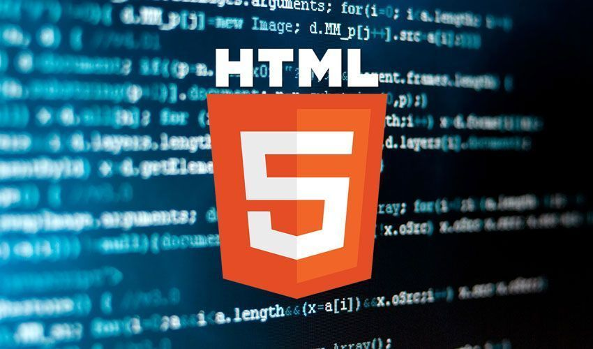

Primer boceto de contenido Frameworks y Posicionamiento Web
Frameworks CSS
Un framework se puede interpretar como un conjunto de herramientas o librerias que contienen modulos
o practicas previamente definidas que son reutilizables.
Siendo asi un framework CSS es un conjutno de estilos graficos y visuales que se emplean para el desarrollo de pagians web.
Los frameworks CSS mas utilizados son:

Posicionamiento Web
Para entender el posicionamiento web, primero hay que hablar de SEO(Search Engina Optimization),la finalidad de una pagina web esta relacionado con un interes comercial, el cual busca que la pagina web creada
sea visualizada por la mayor cantidad de personas. Para que nuestra pagina web sea llamativa y que los motores de busqueda le den mayor peso, es necesario el uso de
un lenguaje de programación y diseño. Es por ello que utilizamos HTML5 que mediante etiquetas damos forma a nuestra pagina web
Es por ello que nuestra responsabilidad como diseñadores de paginas es de utilizar de la mejor manera posible el codigo de HTML 5 y sus etiquetas,
para que nuestra pagina sea mas llamativa y que los buscadores entiendan el codigo que fue empleado. 
Referencias:
Celaya Luna, A. (2014). Creación de páginas web: HTML 5 (pág. 1 a 60). Recuperado de https://elibro-net.bibliotecavirtual.unad.edu.co/es/ereader/unad/56045i Saltiveri, T. G. (2012). Diseño de sistemas interactivos centrados en el usuario. Editorial UOC. (Pág. 211 a 264). Recuperado de https://elibro-net.bibliotecavirtual.unad.edu.co/es/ereader/unad/56326?page=212
Ochoa Torres, J. (04,12,2018). O.V.I. SCV – Sistema Controlador de Versiones. [Archivo de Video]. Recuperado de http://hdl.handle.net/10596/22592